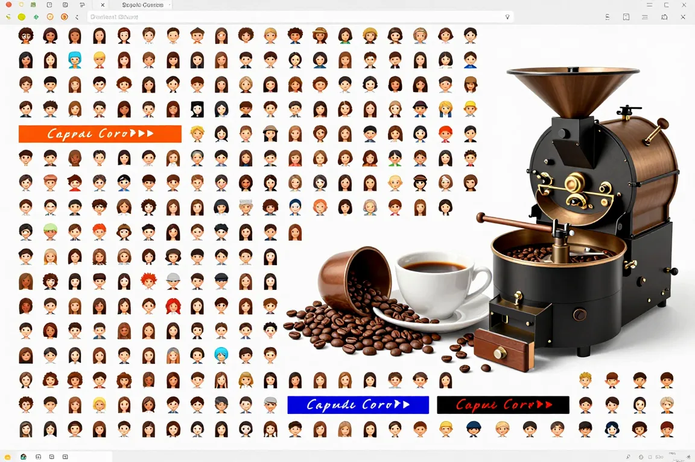

internet · c. 1996–2012 · also: phpBB forum, Web forum, Message board
A web forum in tables: a list of boards in categories, topics with reply and view counts, and posts with a user column that shows an avatar, a rank, a post count and a signature.

Core thesis
A forum is a club with rooms; each member carries a visible rank, a picture and a signature from post to post.
Design principles
Show the index as a table of boards in categories, with columns for topics, posts and the last post.
Put each post in a two-column table row: the user column of 150px to 180px at the left, the post at the right.
Show in the user column an avatar of 80px to 100px, a rank title, a row of rank pips, the join date and the post count.
Put a signature under each post after a short rule, with an image banner of at most 468px by 60px.
Use a header band with the forum logo, and a breadcrumb line: Index > Board > Topic.
Mark a pinned topic with a pin icon and a locked topic with a lock icon in the topic list.